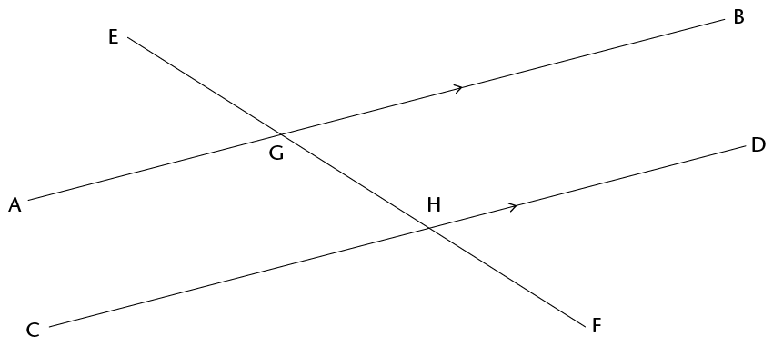

12 Meetkunde van reguit lyne
In Graad 8 het jy verbande tussen hoeke op reguit lyne geïdentifiseer. In hierdie hoofstuk sal jy al die verbande tussen hoeke hersien en duidelike beskrywings van hulle neerskryf.
12.1 Verbande tussen hoeke
Onthou dat 360\(^\circ\) een volle rotasie is
As jy na iets kyk en dan heeltemal in die rondte draai sodat jy weer daarna kyk, het jy deur ’n hoek van 360\(^\circ\). gedraai. As jy net halfpad omdraai sodat jy na iets kyk wat agter jou rug was, het jy deur ’n hoek van 180\(^\circ\) gedraai.
- Beantwoord die vrae oor die figuur.

- Is FOD kleiner of groter as ’n regte hoek?
- Is FOE kleiner of groter as ’n regte hoek?
In die figuur hier bo is \(\text{F}\)\(\hat{\text{O}}\)\(\text{D}\) + \(\text{F}\)\(\hat{\text{O}}\)\(\text{C}\)= die helfte van ’n omwenteling = 180\(^\circ\).
Die som van die hoeke op ’n reguit lyn is 180\(^\circ\).
Wanneer die som van hoeke 180\(^\circ\), is, word die hoeke supplementêr genoem.

- Hoe groot is \(\text{C}\)\(\hat{\text{M}}\)\(\text{B}\)?
- Waarom sê jy so?
- Hoe groot is \(\text{C}\)\(\hat{\text{M}}\)\(\text{P}\)
- Verduidelik jou redenasie.
- Hoe groot is hierdie hoeke?
- Hoe weet jy dit?

Wanneer een lyn twee gelyke hoeke vorm waar dit ’n ander lyn ontmoet, sê ons die twee lyne is loodreg op mekaar.

In hierdie hoofstuk moet jy goeie redes gee vir elke bewering wat jy maak.
- Lyk dit asof \(\text{C}\)\(\hat{\text{M}}\)\(\text{A}\) en \(\text{B}\)\(\hat{\text{M}}\)\(\text{D}\) ewe groot is?
- Kan jy verduidelik waarom hulle ewe groot is?
- Waaraan is \(\text{C}\)\(\hat{\text{M}}\)\(\text{A}\) + \(\text{D}\)\(\hat{\text{M}}\)\(\text{A}\) geluk?
- Wat is \(\text{C}\)\(\hat{\text{M}}\)\(\text{A}\) + \(\text{C}\)\(\hat{\text{M}}\)\(\text{B}\)?
- Is dit waar dat \(\text{C}\)\(\hat{\text{M}}\)\(\text{A}\) + \(\text{D}\)\(\hat{\text{M}}\)\(\text{A}\) = \(\text{C}\)\(\hat{\text{M}}\)\(\text{A}\) + \(\text{C}\)\(\hat{\text{M}}\)\(\text{B}\)
- Watter hoek kom aan albei kante van die vergelyking in (e) voor?
Waarom sê jy so?
Is dit waar dat
Probeer nou jou waarneming in vraag 5(a) verduidelik.
Wanneer twee reguit lyne sny, is die regoorstaande hoeke gelyk.

- As BMC =
125\(^\circ\), hoe groot is AMD?
- Waarom sê jy so?
LYNE EN HOEKE
’n Lyn wat ander lyne sny, word ’n snylyn genoem.

In die patroon hier bo is AB ewewydig aan CD en EF // GH // KB // LD
- Ondersoek of die ooreenkomstige hoeke ewe groot is deur natrekpapier te gebruik.
Trek die hoek na wat jy met ander hoeke wil vergelyk en plaas dit bo-op die ander
hoeke om uit te vind of hulle ewe groot is. Wat merk jy op?
- Hoeke a, b, c, d en e is ooreenkomstige hoeke. Lyk dit asof die ooreenkomstige hoeke ewe groot is?
- Beskryf die posisie van ooreenkomstige hoeke wat gevorm word wanneer ’n snylyn ander lyne sny.
- Die volgende is pare verwisselende hoeke: g en o; j en s; en k en r. Lyk dit asof hierdie hoeke ewe groot is?
- Identifiseer nog twee pare verwisselende hoeke.
- Gee ’n duidelike beskrywing van die relatiewe posisie van verwisselende hoeke wat gevorm word wanneer ’n snylyn ander lyne sny.
- Het jy iets opgemerk omtrent party van die pare ooreenkomstige hoeke toe jy die ondersoek in vraag 6 gedoen het? Beskryf jou bevinding.
- Hoeke f en o; i en q; en k en s is almal pare ko-binnehoeke. Identifiseer nog drie pare ko-binnehoeke in die patroon.
Ondersoek of die verwisselende hoeke ewe groot is deur natrekpapier te gebruik. Trek die hoek na wat jy wil vergelyk en plaas dit bo-op die ander hoek om uit te vind of hulle ewe groot is. Wat merk jy op?

Die hoeke in dieselfde relatiewe posisie by elke snyding waar ’n reguit lyn twee ander lyne kruis, word ooreenkomstige hoeke genoem.
HOEKE DEUR EWEWYDIGE LYNE GEVORM
Ooreenkomstige hoeke
Die lyne AB en CD hier onder ontmoet nooit nie. Jy weet reeds dat lyne wat nooit ontmoet nie en ’n vaste afstand van mekaar af is, ewewydige lyne genoem word. Ons skryf AB \(||\) CD.
Ewewydige lyne het dieselfde rigting, d.w.s. hulle vorm gelyke ooreenkomstige hoeke met enige lyn wat hulle sny.

Die lyn EF sny AB by G en CD by H.
EF is ’n snylyn wat ewewydige lyne AB en CD sny.
-
- Beskou EGA en
EHC in die figuur hier bo sorgvuldig. Hulle word ooreenkomstige hoeke genoem.
Lyk dit asof hulle ewe groot is?
- Meet die twee hoeke om te kontroleer of hulle ewe groot is. Wat merk jy op?
- Beskou EGA en
EHC in die figuur hier bo sorgvuldig. Hulle word ooreenkomstige hoeke genoem.
Lyk dit asof hulle ewe groot is?
- Gestel \(\text{E}\)\(\hat{\text{G}}\)\(\text{A}\) en \(\text{E}\)\(\hat{\text{H}}\)\(\text{C}\) is regtig ewe groot. Sal \(\text{E}\)\(\hat{\text{G}}\)\(\text{B}\) en \(\text{E}\)\(\hat{\text{H}}\)\(\text{D}\) dan ook ewe groot wees? Gee redes om jou antwoord te ondersteun.
- Dink jy die hoeke AGF en DHE moet ook verwisselende hoeke genoem word?
- Dink jy verwisselende hoeke is ewe groot? Ondersoek deur natrekpapier soos vroeër te gebruik of meet die hoeke akkuraat met jou gradeboog.
- Probeer verduidelik waarom verwisselende hoeke gelyk is wanneer die lyne wat gesny word ewewydig is. Hou in gedagte dat ooreenkomstige hoeke ewe groot is.
- Is\(\text{B}\)\(\hat{\text{G}}\)\(\text{H}\) en \(\text{D}\)\(\hat{\text{H}}\)\(\text{F}\) in die figuur ooreenkomstige hoeke?
-
- Wat kan jy sê van \(\text{B}\)\(\hat{\text{G}}\)\(\text{H}\) + \(\text{A}\)\(\hat{\text{G}}\)\(\text{H}\) Gee ’n rede
- Wat kan jy sê van \(\text{D}\)\(\hat{\text{H}}\)\(\text{G}\) + \(\text{C}\)\(\hat{\text{H}}\)\(\text{G}\)? Gee ’n rede.
- Is dit waar dat \(\text{B}\)\(\hat{\text{G}}\)\(\text{H}\) + \(\text{A}\)\(\hat{\text{G}}\)\(\text{H}\) = \(\text{D}\)\(\hat{\text{H}}\)\(\text{G}\) + \(\text{C}\)\(\hat{\text{H}}\)\(\text{G}\)? Verduidelik.
- Sal die vergelyking in (c) steeds waar wees as jy \(\text{B}\)\(\hat{\text{G}}\)\(\text{H}\) on the left-hand side with angle \(\text{C}\)\(\hat{\text{H}}\)\(\text{G}\)?
- Wat kan jy sê van \(\text{B}\)\(\hat{\text{G}}\)\(\text{H}\) + \(\text{A}\)\(\hat{\text{G}}\)\(\text{H}\) Gee ’n rede
Wanneer twee ewewydige lyne deur ’n snylyn gesny word, is die ooreenkomstige hoeke ewe groot.
Verwisselende hoeke
\(\text{B}\)\(\hat{\text{G}}\)\(\text{F}\) en \(\text{C}\)\(\hat{\text{H}}\)\(\text{E}\) hier onder word verwisselende hoeke genoem. Hulle is aan F en CH BG teenoorgestelde kante van die snylyn.

Wat merk jy op?
Wanneer ewewydige lyne deur ’n snylyn gesny word, is die verwisselende hoeke ewe groot.
Deur die volgende vrae te beantwoord behoort jy te kan sien hoe jy kan verduidelik waarom verwisselende hoeke gelyk is as ewewydige lyne deur ’n snylyn gesny word.
Wat weet jy van ooreenkomstige hoeke?

Co-interior angles
The angles \(\text{A}\)\(\hat{\text{G}}\)\(\text{H}\) and \(\text{C}\)\(\hat{\text{H}}\)\(\text{G}\) in the figure below are called co-interior angles.
"co-" means together.
"co-interior" means on the same side.
They are on the same side of the transversal.

- What do you know about \(\text{C}\)\(\hat{\text{H}}\)\(\text{G}\) + \(\text{D}\)\(\hat{\text{H}}\)\(\text{G}\)? Explain.
- What do you know about \(\text{B}\)\(\hat{\text{G}}\)\(\text{H}\) + \(\text{A}\)\(\hat{\text{G}}\)\(\text{H}\)? Explain.
- What do you know about \(\text{B}\)\(\hat{\text{G}}\)\(\text{H}\)+ \(\text{C}\)\(\hat{\text{H}}\)\(\text{G}\)? Explain.
- What conclusion can you draw about \(\text{A}\)\(\hat{\text{G}}\)\(\text{H}\) + \(\text{C}\)\(\hat{\text{H}}\)\(\text{G}\)?
Give detailed reasons for your conclusion.
When two parallel lines are cut by a transversal, the sum of two co-interior angles is 180\(^\circ\). Another way of saying this is to say that the two co-interior angles are supplementary.
12.2 Identify and name angles
- In the figure below, the line
RF is perpendicular to AB.

- Is RF also perpendicular to CD? Justify your answer.
- Name four pairs of supplementary angles in the figure. In each case say how you know that the angles are supplementary.
- Name four pairs of co-interior angles in the figure.
- Name four pairs of corresponding angles in the figure.
- Name four pairs of alternate angles in the figure.
 If it is also given that RF is
perpendicular to AB, will RF also be perpendicular to CD?
Justify your answer.
If it is also given that RF is
perpendicular to AB, will RF also be perpendicular to CD?
Justify your answer.- Name all pairs of supplementary angles in the figure. In each case say how you know that the angles are supplementary.
- Suppose \(\text{E}\)\(\hat{\text{G}}\)\(\text{A}\) = x. Give the size of as many angles in the figure as you can, in terms of x. Each time give a reason for your answer.
12.3 Solving problems
- Line segments AB and
CD in the figure below are parallel. EF and IJ are also
parallel. Mark these facts on the figure, and then answer the
questions.
When you solve problems in geometry you can use a shorthand way to write your reasons. For example, if two angles are equal because they are corresponding angles, then you can write (corr \(\angle\)s, AB \(||\) CD) as the reason.

- Name five angles in the figure that are equal to \(\text{G}\)\(\hat{\text{H}}\)\(\text{D}\) . Give a reason for each of your answers.
- Name all the angles in the figure that are equal to \(\text{A}\)\(\hat{\text{G}}\)\(\text{H}\) . Give a reason for each of your answers.

Find the sizes of as many angles in the figure as you can, giving reasons.
- Find the sizes of as many angles in the figure as you can, giving reasons.
- Are EF and CD parallel? Give reasons for your answers.